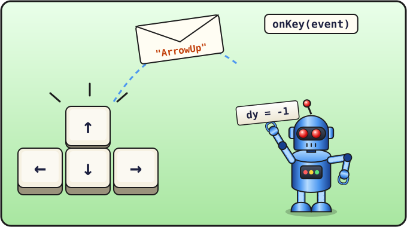

Lección 10 de 16 ⏱ 45 minutos
Control con las flechas
La serpiente va a su aire, y ya es hora de que obedezca a quien juega. Vamos a enseñar al programa a saber qué tecla se ha pulsado y a girar la serpiente con las flechas.
- descubrir qué son los eventos;
- «suscribirte» a las pulsaciones de teclas con
addEventListener; - aprender cómo se llaman las teclas de flecha;
- enseñar a la serpiente a girar, pero no a dar media vuelta.
| 10 min | Eventos: espiamos al teclado |
| 15 min | La función onKey: giramos la serpiente |
| 10 min | Prohibido dar media vuelta |
| 10 min | Jugamos y hacemos las tareas |

"ArrowUp" a nuestra función onKey, que gira la serpiente: dy = -1.Eventos
Cuando pulsas una tecla, mueves el ratón o haces clic en un botón, el navegador se da cuenta. Estas cosas que pasan se llaman eventos. Podemos pedirle al navegador: «Cuando pulsen una tecla, llama a mi función».
Añade al final del script, antes de draw();:
function onKey(event) {
console.log(event.key);
}
document.addEventListener("keydown", onKey);
"keydown"es el evento «se ha pulsado una tecla» (key down: «tecla abajo»).addEventListenersignifica «añade un oyente»: a partir de ahora, cada vez que se pulse una tecla, el navegador llamará a nuestra funciónonKey.- El propio navegador le pasa a la función el parámetro
event, donde está apuntado todo sobre el evento. Enevent.keyestá el nombre de la tecla.
Guarda, recarga la página, abre la consola y haz clic con el ratón en la página (para que «escuche» al teclado). Pulsa distintas teclas y flechas. Sus nombres aparecen en la consola:
ArrowUp ArrowDown ArrowLeft ArrowRight a Enter
Arrow significa «flecha» en inglés. Así que ArrowUp es la flecha hacia arriba.
Giramos
Ahora, en lugar de console.log, cambiaremos la dirección dx y dy. ¿Recuerdas la tabla de direcciones de la lección 8? Cambia la función onKey:
function onKey(event) {
console.log(event.key);
if (event.key === "ArrowUp") {
dx = 0;
dy = -1;
}
if (event.key === "ArrowDown") {
dx = 0;
dy = 1;
}
if (event.key === "ArrowLeft") {
dx = -1;
dy = 0;
}
if (event.key === "ArrowRight") {
dx = 1;
dy = 0;
}
}
Guarda, recarga, haz clic en el campo… ¡y maneja con las flechas! 🎮
El nombre de una tecla es texto, por eso "ArrowUp" va entre comillas. Las mayúsculas importan: "arrowup" no funciona.
¡Hacia atrás no!
Prueba esto: la serpiente va hacia la derecha y pulsas la flecha izquierda. La serpiente da media vuelta y pasa a través de sí misma. En la Serpiente de verdad eso no se puede: la cabeza chocaría con su propio cuerpo.
La regla es: solo se puede girar hacia arriba si la serpiente no va hacia abajo en ese momento. Ir hacia abajo significa que dy vale 1. Lo añadimos a la condición con && («y»):
function onKey(event) {
if (event.key === "ArrowUp" && dy !== 1) {
dx = 0;
dy = -1;
}
if (event.key === "ArrowDown" && dy !== -1) {
dx = 0;
dy = 1;
}
if (event.key === "ArrowLeft" && dx !== 1) {
dx = -1;
dy = 0;
}
if (event.key === "ArrowRight" && dx !== -1) {
dx = 1;
dy = 0;
}
}
Leamos la primera condición en español: «Si se ha pulsado la flecha arriba y la serpiente no va hacia abajo, entonces girar hacia arriba».
- Con las flechas, haz que la serpiente dibuje un «cuadrado» en el campo. ¿Lo has conseguido?
- Haz la serpiente más rápida (un intervalo de 120) e intenta manejarla. ¿Y con 60?
- ⭐ Muchos juegos se manejan con las teclas W A S D. Añádelas. Pero ojo: si tienes activado Bloq Mayús,
event.keyde la tecla W será"W", ¡no"w"! Por eso usaevent.code: es el «sitio» de la tecla en el teclado, y no depende de las mayúsculas ni del idioma del teclado:"KeyW","KeyA","KeyS","KeyD". Pista: la condición se puede ampliar con||:if ((event.key === "ArrowUp" || event.code === "KeyW") && dy !== 1) {
📄 El archivo snake.html completo después de esta lección
<!DOCTYPE html>
<html>
<head>
<meta charset="utf-8">
<title>Serpiente</title>
</head>
<body>
<h1>Serpiente</h1>
<canvas id="game" width="400" height="400"></canvas>
<script>
let canvas = document.getElementById("game");
let ctx = canvas.getContext("2d");
let size = 20;
let cells = 20;
let snake = [
{ x: 10, y: 10 },
{ x: 9, y: 10 },
{ x: 8, y: 10 }
];
let apple = { x: 15, y: 10 };
let dx = 1;
let dy = 0;
function clearField() {
ctx.fillStyle = "black";
ctx.fillRect(0, 0, 400, 400);
}
function drawCell(x, y, color) {
ctx.fillStyle = color;
ctx.fillRect(x * size, y * size, size - 1, size - 1);
}
function draw() {
clearField();
drawCell(apple.x, apple.y, "red");
for (let i = 0; i < snake.length; i++) {
drawCell(snake[i].x, snake[i].y, "lime");
}
drawCell(snake[0].x, snake[0].y, "yellow");
}
function step() {
let head = { x: snake[0].x + dx, y: snake[0].y + dy };
if (head.x >= cells) {
head.x = 0;
}
if (head.x < 0) {
head.x = cells - 1;
}
if (head.y >= cells) {
head.y = 0;
}
if (head.y < 0) {
head.y = cells - 1;
}
snake.unshift(head);
snake.pop();
draw();
}
function onKey(event) {
if (event.key === "ArrowUp" && dy !== 1) {
dx = 0;
dy = -1;
}
if (event.key === "ArrowDown" && dy !== -1) {
dx = 0;
dy = 1;
}
if (event.key === "ArrowLeft" && dx !== 1) {
dx = -1;
dy = 0;
}
if (event.key === "ArrowRight" && dx !== -1) {
dx = 1;
dy = 0;
}
}
document.addEventListener("keydown", onKey);
draw();
setInterval(step, 200);
</script>
</body>
</html>
Compruébalo
- Sé qué es un evento y qué hace
addEventListener. - Sé averiguar el nombre de una tecla con la consola.
- Sé explicar la condición
event.key === "ArrowUp" && dy !== 1.